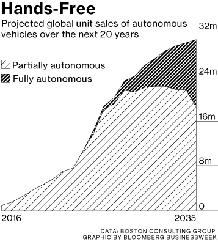

By the 1960s, enthusiasts of artificial intelligence (AI) on computers began dreaming of cars smart enough to navigate
ordinary streets on their own. The challenges were daunting – essentially to reverse-engineer the relevant systems in a moving animal like a cockroach:
1) Sensing
2) Processing (modeling the outside world, making decisions)
3) Reacting, with appropriate movement
The first and last steps were feasible with known technology. The unknown part was the processing, the machine intelligence needed in between.
And now, autonomous cars coming into true with new technology. The Trolley Problem is an ethical brainteaser that’s been entertaining philosophers since
it was posed by Philippa Foot in 1967 has become a big part of concern for autonomous car.
Also, about the security problem which is always the concerns since internet happened. Especially, database is used every place. Who is using our data,
who can use our data, who can protect our data, we can't easily find the answers.
Before the day autonomous cars can be bought or used, programmers need to figure everything out. In the same time, laws need to be confirmed. With hard and convincing tests
and scrupulous laws, autonomous cars can finally drive in the road.

Contact email: jaljalchan0314@gmail.com | last update: March 3, 2016 10:19 | copyrights